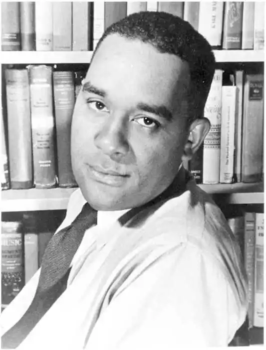

РАЙТ, Річард (Wright, Richard — 04.09.1908, побл. м. Натчез, шт. Міссісіпі — 28.11.1960, Париж) — американський письменник. Предки Райта були рабами на плантаціях. Його дід, заслужений ветеран громадянської війни, через бюрократичну помилку втратив пенсію і упродовж багатьох років жив у злиднях. Мати письменника була вчителькою початкової школи у містечку Натчез, у штаті Міссісіпі, який на той час вважався гніздом південного расизму. Там вона познайомилася зі збирачем бавовни Натаніелем, батьком майбутнього письменника. Невдовзі після народження Річарда, котрий став першою дитиною у сім'ї, його батьки, рятуючись від злиднів, переїхали у Мемфіс, де знайшли притулок у старому напівзруйнованому будинку. Через деякий час батько несподівано залишив сім'ю, і мати Райта залишилася одна з двома маленькими дітьми. Відтоді нестатки постійно переслідували родину. Коли Райту виповнилося сім років, він не зміг піти до школи, тому що його одяг перетворився у справжнє ганчір'я. Лише наступного року хлопчик сів за шкільну парту. Через те, що сім'я постійно переїздила з одного міста до іншого, Річард у жодній зі шкіл не вчився більше року.
Дитинство залишило у пам'яті Райта чимало гірких спогадів, у тому числі й картини расистського терору; йому було дев'ять років, коли неподалік від Мемфіса натовп лінчував негра. Він також бачив, як расисти знущалися над чорними ветеранами, які повернулися з війни. Згодом ці страшні спомини оживуть у його книгах.
Незважаючи на постійні переїзди і поневіряння, життя у родичів та у притулках, нездоланне відчуття голоду і страх, Річардові вдавалося відмінно навчатися, вражаючи ровесників та вчителів своєю пам'яттю і швидкістю сприйняття. Він надзвичайно багато читав, дуже рано виявилися і літературні здібності Райта. Хоча йому доводилося змалечку заробляти на прожиття, у ньому жила нездоланна мрія стати письменником. Якось, коли Райт працював служником у білої господині, щирої південки, вона, дізнавшись про його наміри, вилаяла юнака: "Ти ніколи не будеш письменником. Хто, дідько б тебе узяв, втовкмачив цю ідею у твою макітру, Нігере?" Втім, подібні "пророцтва" Райта ще не раз доводилося вислуховувати від різних людей. У 1927 р. 19-річний Райт вирішив залишити Південь, де, як він слушно вважав, на нього чекала лише фізична та духовна деградація. Він подався на Північ, у Чикаго. У його житті почалася нова смуга — існування пролетаря, який ледве зводить кінці з кінцями, постійно шукаючи роботу: він працював у цукерні, мив посуд, був прибиральником, санітаром у лікарні, дрібним клерком. Повертаючись після трудового дня у свою комірчину, Райт напружено працював над своїми першими літературними творами. У 1932 p. Райт познайомився з американськими комуністами, вступив у комуністичну партію, почав публікуватися у лівій пресі як поет і публіцист. Особливу увагу Райт приділяв підтримці негритянських літераторів-початківців. У 1937 р. він опублікував важливу теоретичну статтю "Програма негритянської літератури". У ній він закликав своїх колег "показати нефам самих себе", правдиво зображати життя темношкірих американців, уникаючи декоративності та сентиментального тону, використовуючи етнічні традиції та багатства нефитянського фольклору. Р. попереджував про небезпеку спрощень і вульгарної соціологізації, що були характерними для деяких письменників радикальної орієнтації у 30-х pp. Він постійно наголошував, що жодна, навіть найпрофесійніше, теорія та ідеологія не можуть компенсувати брак літературної майстерності. На думку Райта, початківці повинні прагнути до засвоєння всього художнього досвіду сучасної літератури від Максима Горького й А. Барбюса до Т. С Еліота і Дж. Джойса. У 1937 р. письменник переїхав із Чикаго у Нью-Йорк, де став редактором ґарлемського видання комуністичної газети "Дейлі воркер". Через рік, у 1938 p., побачила світ збірка новел Р. під афористичною назвою "Діти дядька Тома" ("Uncle's Tom Children"), яка набула широкого розголосу. За словами одного з критиків, авторові книги судилося стати "голосом нової генерації чорної Америки", "суворим і сміливим голосом, у якому є щось від мелодій старовинних спірічуелс". Героями всіх п'яти новел, що увійшли до збірки, є нефи з провінційного Півдня, кофі у відповідь на упослідження, насильство, приниження починають бунтувати, давати відсіч кривдникам. Вони долають рабську психологію "непротивлення", яку уособлював дядько Том зі знаменитого роману Г. Бічер-Стоу. Новели у збірці розташовані таким чином, що у кожній з них відтворюється новий етап в ідейному становленні героїв Райта. У березні 1940 р. вийшов друком роман Райта "Син Америки"("Native Son"), який здобув сенсаційний успіх. Книга стала подією не лише літературного, а й суспільного значення. За силою резонансу роман Райта порівнювали з такими творами, як "Хатина дядька Тома" Г. Бічер-Стоу, "Джунглі" Е. Сінклера, "Американська трагедія" Т. Драйзера, "Грона гніву" Дж. Стейнбека. Мали рацію ті критики, які назвали книгу "негритянською американською трагедією". І хоча необхідність у такій книзі відчувалася вже давно, проте, безперечно, що важливу роль відіграла й та обставина, що більшість читачів не сподівалися від Р. такого твору. Ліві критики, здавалося б, слушно припускали, що письменник-комуніст зобразить у центрі свого нового твору героїчний характер борця, нефа, котрий кидає виклик расовій дискримінації. Але Райт володів достатньою художньою інтуїцією і громадянською мужністю для того, щоби зробити героєм роману чорношкірого злочинця, люмпена, котрий скоює два жорстокі вбивства: перше (щоправда, без попереднього наміру) — білої дівчини Мері, доньки мільйонера Дальтона, у якого він працює водієм, і друге — своєї коханки, негритянки Бессі. Становлення художніх принципів Райта загалом відбувалося в річищі драйзерівської традиції. Письменник показував деморалізаційний вплив середовища на особистість, згубну дію злиднів і безвихідності на психіку свого героя. У центрі роману — Бігґер Томас, двадцятирічний безробітний, який ледве животіє на жалюгідну соціальну допомогу, перетворившись на люмпена та ізгоя негритянського гетто, кварталу Саут-Сайд у Чикаго, де живуть, в основному, чорношкірі злидарі. Бігґер Томас, і це істотна деталь, виріс у штаті Міссісіпі, де повною мірою зазнав упослідження сегрегацією. Переїхавши на Північ, він став одним із багатьох "зайвих людей"; усе його світосприйняття просякнуте відчуттям кривди і своєї "другосортності". Його ставлення до білих забарвлене страхом і ворожістю. Райт побудував свій роман на драматичному, гострому, детективному сюжеті. Скоївши перше вбивство, Біґґер Томас намагається приховати сліди злочину. Проте це йому не вдається, починається погоня. Армія полісменів полює на втікача, який намагається сховатися у міських нетрищах. Врешті-решт, на даху одного з будинків Біґґер Томас потрапляє до рук поліції. Роман, який охоплює короткий проміжок часу, складається з трьох частин: у першій — "Страх" — йдеться про вбивство Мері Дальтон, друга — "Втеча" — розповідає про розшук злочинця, третя — "Доля" — про суд над Біґґером Томасом. Райт показує, як суспільство, яке зробило з героя нелюда, розправилося з ним. Для прокурора Баклі, який перебуває у полоні анти-негритянських стереотипів, Біґґер Томас — недолюдок, напівтварина. Під час процесу преса розпалює психоз ненависті до чорних. Антиподом прокурора Баклі в романі виступає адвокат-комуніст Борис Макс, для якого підсудний не просто злочинець, а представник пригнобленого народу, що у відчаї зважується на спробу анархічного бунту. Не виправдовуючи злочинів Біґґера Томаса, адвокат у своїй промові досліджує політичні, соціальні, психологічні передумови скоєного убивства. Він показує, що злочин скоїла людина без належної освіти та життєвої мети, яка страждає від духовного голоду, безвихідності і озлобленості. Расова дискримінація призвела до психологічної неповноцінності його натури: це озлоблена самотня людина, для якої не існує ні дружби, ні родинної приязні. Життєва філософія Біґґера примітивна і похмура: "Ми чорні, а вони білі. У них є все, а у нас нічого. Їм можна всюди, а нам нікуди. Живемо, як у тюрмі". Письменник спростував поширені шаблони, згідно з якими знедолений злидар повинен уособлювати доброту, великодушність, щирі почуття. Чудово знаючи побут чорного дна, Райт розумів, що в житті все набагато складніше. При цьому письменник пам'ятав і про відповідальність свого героя, відкидаючи прямолінійний детермінізм у трактуванні образу Біґґера Томаса. Герой Райта — аж ніяк не пасивна жертва ворожих обставин. Біґґер ненавидить білих, він не розкаюється у скоєному, а вбивство сприймає мало як не акт внутрішнього самовизволення. Лише у в'язниці він починає поволі прозрівати, хоча й надалі залишається вельми потайною, некомунікабельною особистістю. Як чесний художник, Райт відмовився від спокуси зобразити перевиховання героя, зміну його світорозуміння. Такі фінали були доволі поширеними у тогочасній літературі, але їхня дидактична тональність, здебільшого, суперечила логіці характерів. Вдосконалюючи уже використані у збірці "Діти дядька Тома" прийоми, Райт показував дійсність з погляду Біґґера Томаса, через його "суб'єктивну призму", домагаючись максимальної наочності зображуваного, увиразнюючи розповідь драматизмом і напруженою дією, уникаючи авторського коментування подій. На думку Райта, роман — це "особлива дія, яка відбувається у його, читача, приватному театрі". Письменник прагнув впливати на читача, вдаючись до навмисного згущення барв, до змалювання відверто брутальних сцен, до символіки та контрастів. Міжнародну славу Райта зміцнила його автобіографічна повість "Чорний хлопчик" (1945). Ця книга значною мірою пояснювала "феномен Райта", його таку типову і водночас унікальну долю. На сторінках повісті постав образ чутливого, вразливого юнака, який пізнає світ у всій його складності та трагізмі, намагаючись пробитися до іншого, гідного життя. Потяг до знань, любов до книг, природна обдарованість стали для героя порятунком від расистських знущань і "свинцевої мерзотності" середовища. У середині 40-х pp.